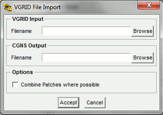
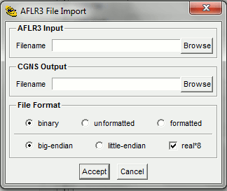
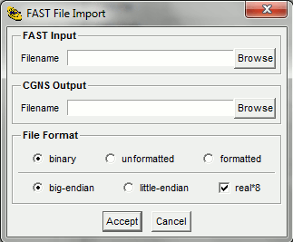

This document describes the import routines which convert data from other formats to CGNS. The following import utilities are currently available.
| PLOT3D | plot3d_to_cgns | Converts a PLOT3D file to structured CGNS |
| Tecplot | tecplot_to_cgns | Converts a Tecplot file to unstructured CGNS |
| Patran | patran_to_cgns | Converts a Patran Neutral file to unstructured CGNS |
| VGRID | vgrid_to_cgns | Converts a VGRID file to unstructured CGNS |
| AFLR3 | aflr3_to_cgns | Converts an AFLR3 file to unstructured CGNS |
| FAST | fast_to_cgns | Converts a FAST file to unstructured CGNS |
| TetGen | tetgen_to_cgns | Converts a TetGen file to unstructured CGNS |
Converts a PLOT3D file to a structured CGNS file. No attempt is made to determine the type of PLOT3D file, you must tell the import routine what type of PLOT3D file to expect through the command line argument list. The default is a multi-block, binary file with no iblank array, written as whole format.
The program is executed from the command line as:
plot3d_to_cgns options XYZfile Qfile CGNSfile
where XYZfile and CGNSfile are required. If Qfile is given, then the solution will be output to the CGNS file, otherwise just the grid will be written.
The command line options are:
| option | description |
|---|---|
| -s | single block PLOT3D file |
| -p | planar grid format |
| -i | PLOT3D file contains an iblank array |
| -n | read iblank array, but ignore it |
| -f | formatted (ASCII) PLOT3D file |
| -u | Fortran unformatted PLOT3D file |
| -M mach | machine type for binary or unformatted PLOT3D file. Mach
is one of: ieee, bsieee, iris, alpha, hp, ibm, sun, dec, cray, convex, nt or linux. Case of mach is not significant, and only the first 2 characters are used. |
| -d | use double-precision (64-bit) |
| -b base | use CGNS base index base. |
| -B name | set CGNS base name to name. |
| -c | convert PLOT3D solution to primitive variables |
| -g gamma | gamma for data conversions (default is 1.4) |
The following panel is created when launched from the CGNSview GUI:

This allows interactive selection of the input and output files and options. The Accept button will then construct the command line and run plot3d_to_cgns. If the import is successfull, CGNSview will read and display the CGNS file.
Converts a Tecplot file to an unstructured CGNS file. Both ASCII and binary files are supported.
The program is executed from the command line as:
tecplot_to_cgns options Tecplotfile CGNSfile
where Tecplotfile and CGNSfile are required.
The command line options are:
| option | description |
|---|---|
| -f | Fix degenerate brick elements |
| -d | Eliminate duplicate nodes using a relative tolerance. The relative tolerance is based on an average distance computed from the bounding box surrounding the nodes divided by the number of nodes. The distance between nodes is then compared with this distance times the input tolerance value. |
| -D | Eliminate duplicate nodes using an absolute tolerance. The tolerance specifies the absolute distance between nodes for duplicate node comparisons. |
| -t tol | Duplicate node checking tolerance. Default value is 10e-6. |
| -B name | Set CGNS base name to name. |
The following panel is created when launched from the CGNSview GUI:

This allows interactive selection of the input and output files and options. The Accept button will then construct the command line and run tecplot_to_cgns. If the import is successfull, CGNSview will read and display the CGNS file.
Converts a PATRAN Neutral file to an unstructured CGNS file. Reads packet 01 (nodes) as nodes, packet 02 (elements) as elements, and nodes (type 5) from packet 21 (named groups) as element sets. A command line option is available to read packet 06 (loads) also. All other packets are read, but not processed.
The program is executed from the command line as:
patran_to_cgns options Patranfile CGNSfile
where Patranfile and CGNSfile are required.
The command line options are:
| option | description |
|---|---|
| -l | Process packet 6 - distributed loads |
| -d | Eliminate duplicate nodes using a relative tolerance. The relative tolerance is based on an average distance computed from the bounding box surrounding the nodes divided by the number of nodes. The distance between nodes is then compared with this distance times the input tolerance value. |
| -D | Eliminate duplicate nodes using an absolute tolerance. The tolerance specifies the absolute distance between nodes for duplicate node comparisons. |
| -t tol | Duplicate node checking tolerance. Default value is 10e-6. |
| -B name | Set CGNS base name to name. |
The following panel is created when launched from the CGNSview GUI:

This allows interactive selection of the input and output files and options. The Accept button will then construct the command line and run patran_to_cgns. If the import is successfull, CGNSview will read and display the CGNS file.
Converts VGRID .cogsg, .mapbc, and .bc files to an unstructured CGNS file. An option, -c, is provided to combine patchs with the same name and boundary condition.
The program is executed from the command line as:
vgrid_to_cgns options VGRIDfile CGNSfile
where VGRIDfile may be any of the VGRID input files (.cogsg, .mapbc, or .bc). The base file name is constructed from VGRIDfile and used to load the additional files. If CGNSfile is given, then the output will be written to that file, otherwise the CGNS file name is constructed from the VGRID file name by replacing the file extension with .cgns.
The command line options are:
| option | description |
|---|---|
| -c | Combine patchs where possible |
The following panel is created when launched from the CGNSview GUI:

This allows interactive selection of the input and output files and options. The Accept button will then construct the command line and run vgrid_to_cgns. If the import is successfull, CGNSview will read and display the CGNS file.
Converts a AFLR3 file to an unstructured CGNS file. Will read a corresponding .mapbc file (if available) to define the boundary conditions.
The program is executed from the command line as:
aflr3_to_cgns options AFLR3file CGNSfile
The name of the AFLR3 file is given by AFLR3file. If CGNSfile is given, then the output will be written to that file, otherwise the CGNS file name is constructed from the AFLR3 file name by replacing the file extension with .cgns. The default file format is assumed to be double-precision, big-endian, Fortran stream (binary).The command line options are:
| option | description |
|---|---|
| -4 | coordinates are real*4 |
| -8 | coordinates are real*8 (default) |
| -f | Formatted ASCII file |
| -u | Fortran unformatted file |
| -s | Fortran stream (binary) file (default) |
| -l | little-endian format |
| -b | big-endian format (default) |
The following panel is created when launched from the CGNSview GUI:

This allows interactive selection of the input and output files and options. The Accept button will then construct the command line and run aflr3_to_cgns. If the import is successfull, CGNSview will read and display the CGNS file.
Converts a FAST file to an unstructured CGNS file. Will read a corresponding .fastbc or .mapbc file (if available) to define the boundary conditions. If CGNSfile is given, then the output will be written to that file, otherwise the CGNS file name is constructed from the FAST file name by replacing the file extension with .cgns. The default file format is assumed to be double-precision, big-endian, Fortran stream (binary).
The program is executed from the command line as:
fast_to_cgns options FASTfile CGNSfile
The name of the FAST file is given by FASTfile. If CGNSfile is given, then the output will be written to that file, otherwise the CGNS file name is constructed from the FAST file name by replacing the file extension with .cgns. The default file format is assumed to be double-precision, big-endian, Fortran stream (binary).The command line options are:
| option | description |
|---|---|
| -4 | coordinates are real*4 |
| -8 | coordinates are real*8 (default) |
| -f | Formatted ASCII file |
| -u | Fortran unformatted file |
| -s | Fortran stream (binary) file (default) |
| -l | little-endian format |
| -b | big-endian format (default) |
The following panel is created when launched from the CGNSview GUI:

This allows interactive selection of the input and output files and options. The Accept button will then construct the command line and run fast_to_cgns. If the import is successfull, CGNSview will read and display the CGNS file.
Converts TetGen .poly, .smesh, .node, .face or .ele file(s) to an unstructured CGNS file.
The program is executed from the command line as:
tetgen_to_cgns TetGenfile CGNSfile
where TetGenfile is the TetGen file. If the file extension is .node, .face, or .ele, the additional files to be read will be constructed from the base file name and appropiate extensions. If CGNSfile is given, then the output will be written to that file, otherwise the CGNS file name is constructed from the TetGen file name by replacing the file extension with .cgns.
The following panel is created when launched from the CGNSview GUI:

This allows interactive selection of the input and output files. The Accept button will then construct the command line and run tetgen_to_cgns. If the import is successfull, CGNSview will read and display the CGNS file.